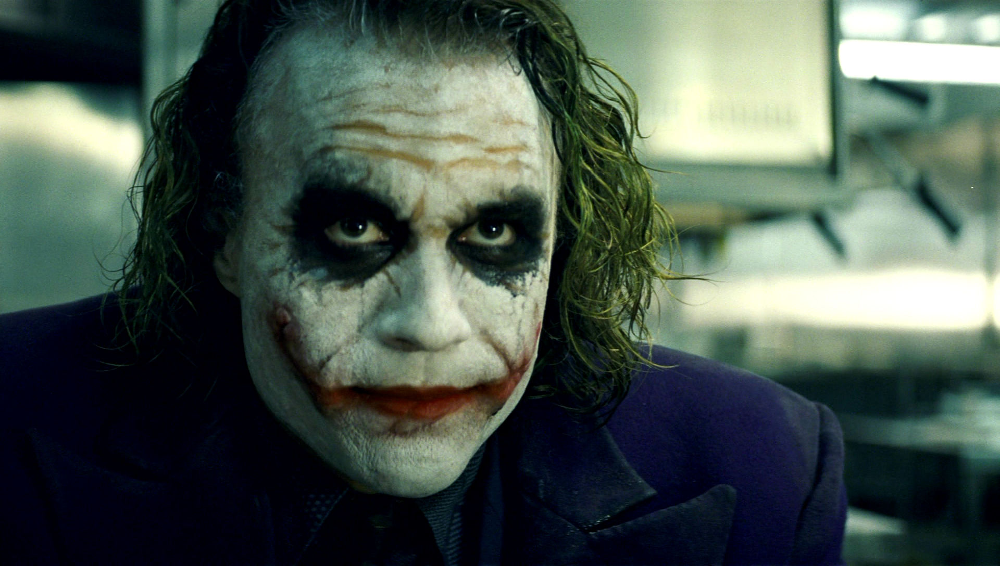

Heath Ledger
Heath Andrew Ledger (ur. 4 kwietnia 1979 w Perth, zm. 22 stycznia 2008 w Nowym Jorku) – australijski aktor i reżyser, od 1998 mieszkał w Stanach Zjednoczonych; popularność zdobył dzięki głównej roli w filmie Tajemnica Brokeback Mountain (2005), pośmiertnie nagrodzony Nagrodą Akademii Filmowej (Oscarem) (2008) dla najlepszego aktora drugoplanowego za rolę Jokera w filmie Mroczny rycerz (2008).

Życiorys
Pochodził z rodziny o korzeniach szkockich i irlandzkich. W wieku 16 lat przerwał naukę w szkole i wyjechał do Sydney, próbując swoich sił w aktorstwie. Miał już wówczas za sobą drobne role w filmie Clowning Around (1992) i serialu Ship to Shore (1993). Wystąpił w kilku popularniejszych australijskich serialach, m.in. Zatoka serc i Siódme poty. Od końca lat 90. występował w produkcjach amerykańskich – najpierw serialu Roar, potem filmach, m.in. Zakochana złośnica (1999), Patriota (2000, u boku Mela Gibsona), Czekając na wyrok (2001), Obłędny rycerz (2001), Ned Kelly (2003), Nieustraszeni bracia Grimm (2005). Wcielił się także w słynnego Giacomo Casanovę w filmie o tym samym tytule (2005).
Za jedną z głównych ról w filmie Anga Lee Tajemnica Brokeback Mountain (2005) otrzymał nominacje do kilku prestiżowych nagród – Oscara (w kategorii najlepsza główna rola męska), Złotego Globu (za najlepszą rolę męską w dramacie), nagrody BAFTA (za główną rolę męską).
Ze związku z aktorką Michelle Williams ma córkę Matildę (ur. 28 października 2005 r.). Wcześniej (2002–2004) był związany z aktorką Naomi Watts.
22 stycznia 2008 r. gospodyni znalazła go nieprzytomnego w apartamencie na Manhattanie. Wezwany lekarz stwierdził zgon. W mieszkaniu obok ciała aktora znaleziono opakowanie tabletek nasennych, jednak zarówno policja, jak i znajomi aktora zdarzenie określają raczej jako tragiczny wypadek, a nie świadome przedawkowanie[2]. Według nowojorskiego zespołu medycyny sądowej aktor zmarł na skutek stopniowego gromadzenia się w organizmie mieszanki sześciu leków na receptę, które przyjmował, co doprowadziło do zatrucia organizmu, zapaści i śmierci[3]. Był w trakcie zdjęć do filmu Parnassus, w którym grał główną rolę Tony'ego. Jego nagła śmierć zmusiła produkcję do zmiany scenariusza. W postać Tony'ego wcieliło się później trzech aktorów: Johnny Depp, Jude Law i Colin Farrell. Trzej aktorzy swoje honoraria postanowili przekazać córce Heatha, Matildzie, aby w ten sposób finansowo zabezpieczyć jej przyszłość.
W 2009 roku podczas 66. Ceremonii wręczenia Złotych Globów pośmiertnie nagrodzono go statuetką w kategorii najlepszy aktor drugoplanowy za rolę w filmie Mroczny rycerz w roli Jokera.
22 stycznia 2009 r., w rocznicę śmierci, został nominowany do Oscara za drugoplanową rolę męską w Mrocznym rycerzu. Dokładnie miesiąc później, podczas gali rozdania statuetek, otrzymał go pośmiertnie. Jest to drugi przypadek w historii nagrody (w kategoriach aktorskich), kiedy otrzymuje go osoba zmarła. Wcześniej nagrodę otrzymał Peter Finch, za rolę w filmie Sieć. W imieniu Heatha Ledgera statuetkę Oscara odebrała rodzina aktora – jego matka, ojciec i siostra. Została ona przekazana córce Heatha, Matildzie.
Filmografia
Filmy fabularne
- 1992:
- Clowning Around jako klaun (niewymieniony w czołówce)
- 1997:
- Cztery łapy (Paws) jako Oberon
- 1997:
- Żyć w Blackrock (Blackrock) jako Toby Ackland
- 1999:
- Partnerska rozgrywka (Two Hands) jako Jimmy
- 1999:
- Zakochana złośnica (10 Things I Hate About You) jako Patrick Verona
- 2000:
- Patriota (The Patriot) jako Gabriel Martin
- 2001:
- Czekając na wyrok (Monster's Ball) jako Sonny Grotowski
- 2001:
- Obłędny rycerz (A Knight's Tale) jako William Thatcher
- 2002:
- Cena honoru (The Four Feathers) jako Harry Faversham
- 2003:
- Ned Kelly jako Ned Kelly
- 2003:
- Zjadacz grzechów (The Order lub The Sin Eater) jako Alex Bernier
- 2005:
- Królowie Dogtown (Lords of Dogtown) jako Skip Engblom
- 2005:
- Tajemnica Brokeback Mountain (Brokeback Mountain) jako Ennis Del Mar
- 2005:
- Casanova jako Casanova
- 2005:
- Nieustraszeni bracia Grimm (The Brothers Grimm) jako Jacob Grimm
- 2006:
- Candy jako Dan
- 2007:
- I'm Not There. Gdzie indziej jestem (I'm Not There) jako Robbie
- 2008:
- Mroczny rycerz (The Dark Knight) jako Joker
- 2009:
- Parnassus: Człowiek, który oszukał diabła (The Imaginarium of Doctor Parnassus) jako Tony
Seriale telewizyjne
- 1993-1994:
- Wyspa przygód (Ship to Shore) jako rowerzysta
- 1996:
- Siódme poty (Sweat) jako Snowy Bowles
- 1997:
- Zatoka serc (Home and Away) jako Scott Irwin
- 1997:
- Prawo miecza (Roar) jako Conor
Linki zewnętrzne
- Heath Ledger w bazie Internet Movie Database (IMDb) (ang.)
- Heath Ledger w bazie filmweb.pl
- Heath Ledger w bazie stopklatka.pl